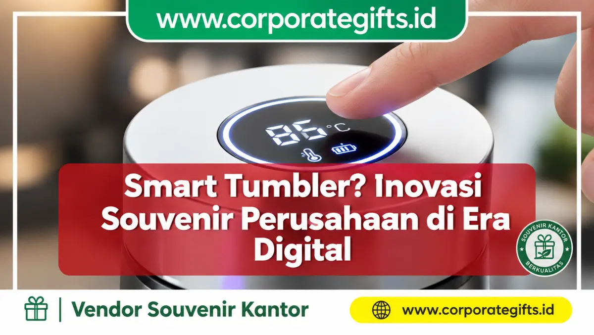

Corporate Gifts ID - Smart tumbler adalah botol minum atau termos vakum yang dilengkapi indikator suhu digital berbentuk layar LED sentuh pada tutupnya, memungkinkan pengguna memantau temperatur minuman secara seketika tanpa perlu membuka tutup botol. Sebagai media corporate gifting modern, smart tumbler menjadi standar baru cinderamata korporat premium karena memadukan utilitas harian dengan citra inovasi berteknologi tinggi.
Poin Kunci Smart Tumbler Korporat:
- Sensor LED Sentuh: Menampilkan temperatur cairan secara real-time dengan satu ketukan jari di atas tutup.
- Material SUS 304 Food Grade: Insulasi dinding ganda hampa udara (double-wall vacuum) menahan suhu panas/dingin hingga 8-12 jam.
- Baterai Tanam Efisien: Chip pintar berdaya rendah mampu beroperasi 1-2 tahun tanpa pengisian daya (tanpa colok charger).
- Prestise & Nilai Persepsi Tinggi: Pilihan sempurna untuk cinderamata klien VIP, direksi, maupun employee recognition kit.
- Kustomisasi Laser Engraving: Grafir logo presisi permanen yang tahan lama dan bernuansa eksklusif.
Di tengah persaingan bisnis yang kian ketat, memberikan souvenir perusahaan yang monoton tidak lagi cukup untuk menciptakan kesan mendalam. Klien, mitra bisnis strategis, dan karyawan milenial mendambakan cinderamata yang bukan hanya fungsional, melainkan juga relevan dengan gaya hidup digital yang serba praktis.
Jika Anda ingin citra perusahaan diasosiasikan dengan teknologi modern, kepedulian terhadap kenyamanan mitra, dan profesionalisme tingkat tinggi, smart tumbler adalah pilihan yang sangat tepat.
Mendefinisikan Smart Tumbler: Lebih dari Sekadar Botol Minum
Secara teknis, smart tumbler adalah botol termos hampa udara yang diintegrasikan dengan modul pintar berbasis micro-sensor di bagian tutup botol. Saat jari menyentuh permukaan layar LCD/LED, sensor termal internal membaca suhu uap di dalam tabung dan langsung menampilkannya dalam satuan derajat Celcius.
Hal ini memberikan pengalaman interaktif yang sangat menyenangkan dan praktis, menghilangkan risiko lidah melepuh akibat meminum air panas secara mendadak atau kekecewaan mendapati kopi favorit yang sudah mendingin.
Fitur Unggulan yang Membuat Smart Tumbler Berbeda
Keunggulan smart tumbler tidak hanya terletak pada layarnya, tetapi pada keseluruhan integrasi material dan rancang bangun:
1. Indikator Suhu Digital (LED Touch Screen)
Layar sentuh responsif dengan visualisasi angka yang jernih memudahkan pengguna memonitor kesegaran minuman. Ini adalah detail inovatif yang menunjukkan perhatian tinggi terhadap kenyamanan pengguna.
2. Material Stainless Steel SUS 304 Food Grade
Dibuat dari baja tahan karat SUS 304 standar medis dan makanan, bagian dalam tabung anti-karat, bebas BPA, serta tidak meninggalkan bau atau rasa logam pada minuman beraroma seperti kopi atau teh.
3. Desain Ramping, Ergonomis, dan Minimalis
Dengan bodi bertekstur matte yang nyaman digenggam dan pilihan warna modern (seperti matte black, pearl white, emerald green, dan metallic silver), smart tumbler sangat pas diletakkan di meja kerja eksekutif maupun cup holder mobil.
4. Baterai Tertanam Berdaya Tahan Ekstra
Modul digital smart tumbler ditenagai oleh baterai kancing litium hemat daya yang tersegel rapat di dalam penutup kedap air, mampu bertahan hingga ratusan ribu kali sentuhan tanpa repot mengisi daya (recharge).

Tampilan layar sentuh LED pada penutup smart tumbler yang menampilkan suhu minuman secara real-time.
Tabel Komparasi Smart Tumbler vs Tumbler Standar
Untuk memahami mengapa smart tumbler menjadi produk primadona dalam pengadaan corporate gift, simak perbandingan karakteristik berikut:
| Parameter Fitur | Smart Tumbler LED | Tumbler Stainless Standar | Tumbler Plastik Promosi |
|---|---|---|---|
| Indikator Suhu | Ada (Layar Sentuh LED Digital) | Tidak Ada | Tidak Ada |
| Material Bodi | Stainless Steel SUS 304 Food Grade | Stainless SUS 201 / 304 | Polypropylene (PP) / Tritan |
| Retensi Suhu | 8 - 12 Jam (Panas / Dingin) | 6 - 8 Jam | 1 - 2 Jam (Tanpa Insulasi) |
| Perceived Value | Sangat Tinggi (Eksklusif & Modern) | Sedang - Tinggi | Ekonomis (Mass Event) |
| Teknik Kustom Logo | Laser Engraving, UV Print Full Color | Grafir Laser, Sablon | Sablon, Pad Print |
Mengapa Smart Tumbler Adalah Pilihan Souvenir Premium yang Cerdas?
Memberikan smart tumbler sebagai souvenir perusahaan memberikan banyak keuntungan strategis bagi reputasi bisnis Anda:
- Memancarkan Citra Modern dan Visioner: Menunjukkan bahwa perusahaan Anda selalu adaptif terhadap perkembangan teknologi dan mengapresiasi inovasi.
- Tingkat Penggunaan Harian yang Tinggi: Berbeda dengan plakat atau pajangan, botol minum pintar selalu dibawa ke ruang rapat, kantor, maupun saat bepergian, memberikan eksposur logo yang konsisten.
- Menjadi Conversation Starter Alami: Fitur sentuh layar LED yang unik memancing interaksi dan rasa ingin tahu rekan kerja atau kolega di sekitar pengguna, memperluas jangkauan brand secara organik.
- Pilihan Tepat untuk Segmen Eksklusif: Sangat ideal dijadikan hadiah tanda terima kasih untuk pimpinan instansi, dewan komisaris, pembicara seminar VIP, atau rekan bisnis level manajerial.
Kustomisasi Smart Tumbler untuk Branding Maksimal
Agar souvenir botol minum ini menjadi duta merek yang berdaya guna, proses personalisasi harus dilakukan dengan teknik cetak industri yang presisi:
- Laser Engraving (Grafir Laser): Metode paling elegan untuk tumbler logam, di mana sinar laser mengikis cat secara mikro untuk menghasilkan logo permanen berwarna perak metalik yang tidak akan pudar atau terkelupas.
- UV Flatbed Printing Full Color: Cocok untuk logo perusahaan dengan gradasi warna warni cerah yang dilapisi lapisan varnish pelindung anti-gores.
- Kemasan Hardbox & Sleeve Kustom: Sempurnakan tampilan smart tumbler dengan kotak kado eksklusif berbusa beludru (velvet) yang dicetak nama penerima untuk memberikan pengalaman unboxing yang mewah.
Pertanyaan Umum Seputar Smart Tumbler (FAQ)
Kesimpulan: Sebuah Pernyataan Inovasi Korporat
Memilih smart tumbler bukan sekadar membagikan tempat minum biasa. Ini adalah tentang memberikan pengalaman sentuhan teknologi, menunjukkan apresiasi tulus, dan menegaskan posisi merek Anda sebagai institusi yang progresif dan modern.
Jelajahi berbagai pilihan tumbler promosi berkualitas melalui katalog produk resmi kami atau ajukan kebutuhan kustomisasi logo via formulir permintaan penawaran harga bersama CorporateGifts.ID.